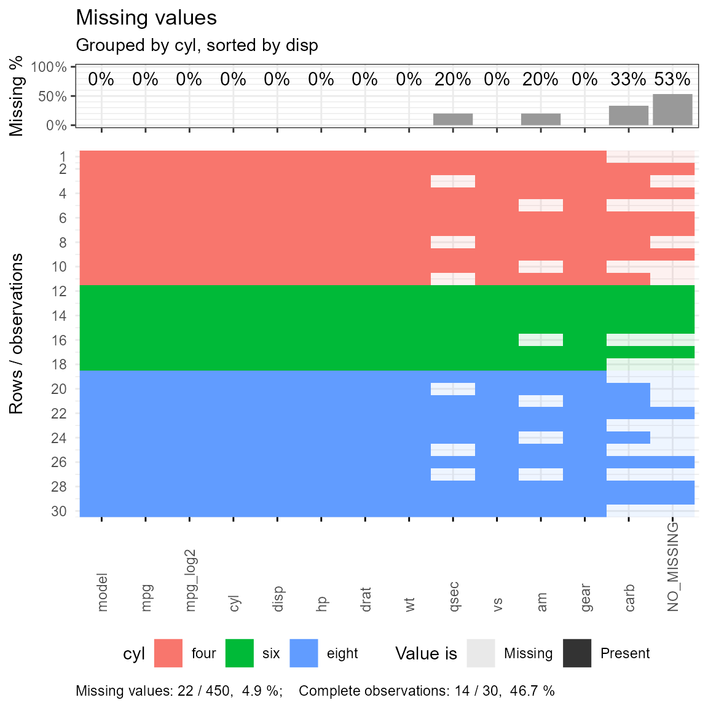
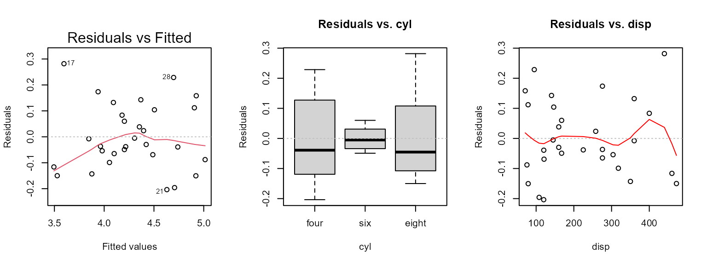
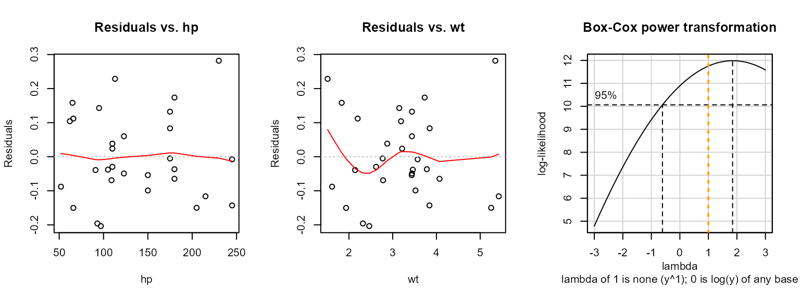
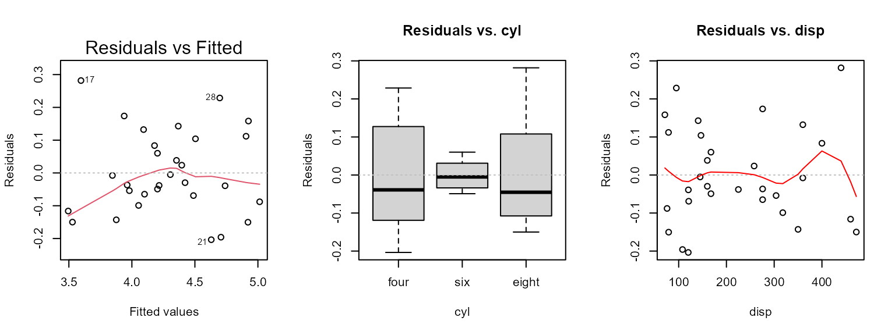
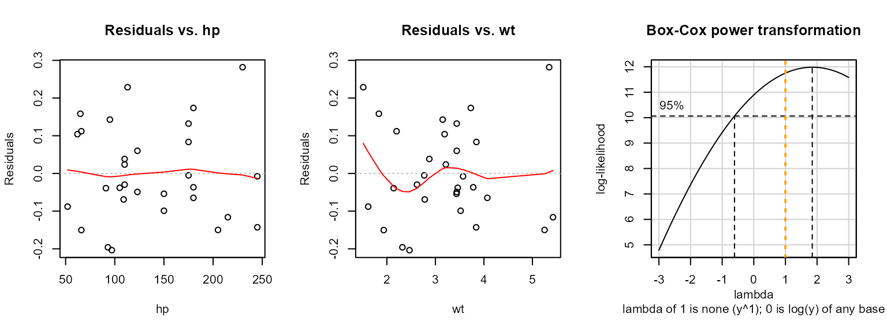
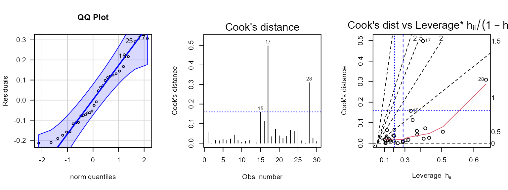
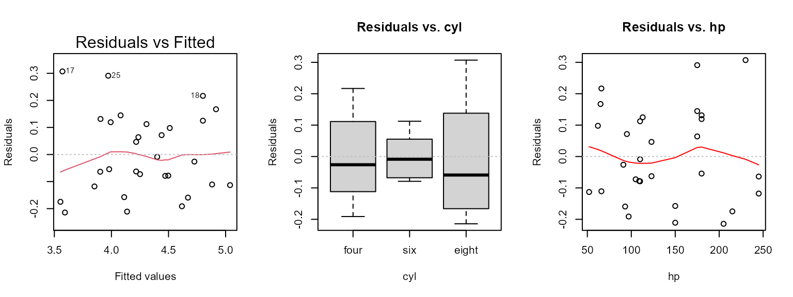
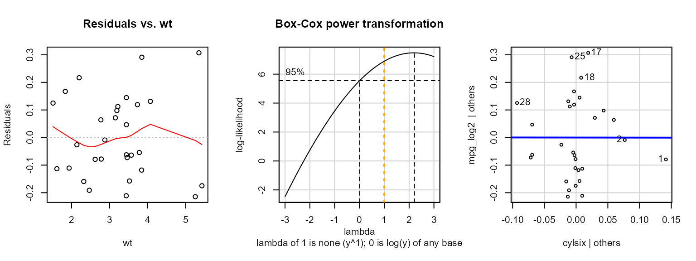
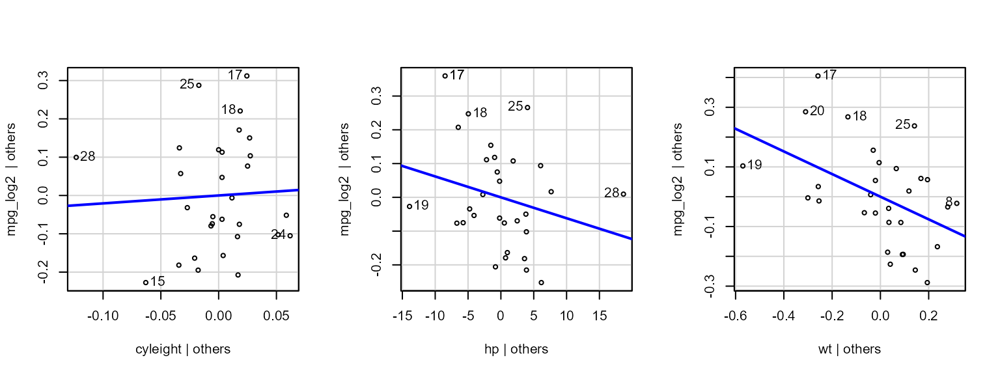
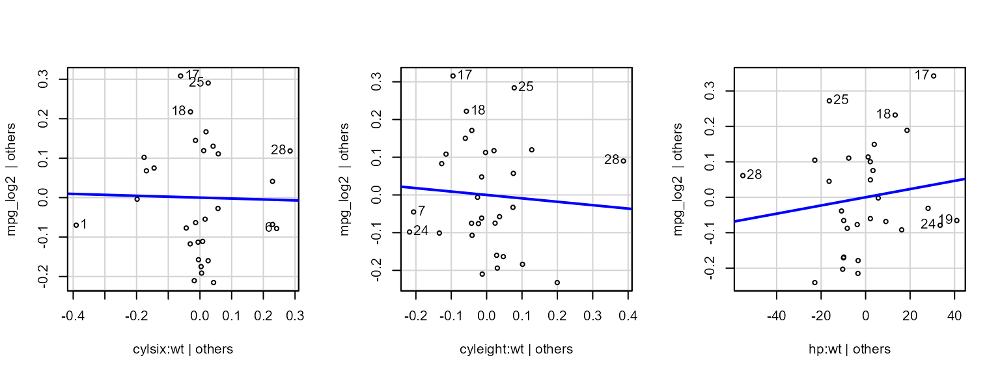

Multiple regression using erikmisc
Plotting all linear model effects and contrasts
Source:vignettes/erikmisc-e_multiple_regression_example.Rmd
erikmisc-e_multiple_regression_example.Rmd- This is an example of multiple regression using the functions in the
erikmiscpackage.
knitr::opts_chunk$set(fig.width = 6, fig.height = 6)
library(erikmisc)
#> Warning: replacing previous import 'tidyr::extract' by 'magrittr::extract' when
#> loading 'erikmisc'
#> ── Attaching packages ─────────────────────────────────────── erikmisc 0.1.17 ──
#> ✔ tibble 3.1.8 ✔ dplyr 1.0.10
#> ── Conflicts ─────────────────────────────────────────── erikmisc_conflicts() ──
#> ✖ dplyr::filter() masks stats::filter()
#> ✖ dplyr::lag() masks stats::lag()
#> erikmisc, solving common complex data analysis workflows
#> by Dr. Erik Barry Erhardt <erik@StatAcumen.com>Load data
- Calculating
mpg_log2and dropping two extremely influential observations. - Creating some missing values to illustrate missing values plot.
data(dat_mtcars_e)
dat_mtcars_e <-
dat_mtcars_e %>%
dplyr::mutate(
mpg_log2 = mpg %>% log2()
) %>%
dplyr::slice(
-c(29, 31)
) %>%
dplyr::select(
model, mpg, mpg_log2
, tidyselect::everything()
)
# create some missing values in variable we won't use in the regression model
var_missing <- c("qsec", "carb", "am")
prop_missing = 0.25
n_missing = sample.int(n = nrow(dat_mtcars_e) * length(var_missing), size = round( prop_missing * nrow(dat_mtcars_e) * length(var_missing)))
ind_missing = expand.grid(1:dim(dat_mtcars_e)[1], 1:length(var_missing))[n_missing, ]
for (i_row in seq_len(nrow(ind_missing))) {
dat_mtcars_e[ind_missing[i_row,1], var_missing[ind_missing[i_row,2]] ] <- NA
}
str(dat_mtcars_e)
#> tibble [30 × 13] (S3: tbl_df/tbl/data.frame)
#> $ model : chr [1:30] "Mazda RX4" "Mazda RX4 Wag" "Datsun 710" "Hornet 4 Drive" ...
#> ..- attr(*, "label")= chr "Model"
#> $ mpg : num [1:30] 21 21 22.8 21.4 18.7 18.1 14.3 24.4 22.8 19.2 ...
#> ..- attr(*, "label")= chr "Miles/(US) gallon"
#> $ mpg_log2: num [1:30] 4.39 4.39 4.51 4.42 4.22 ...
#> ..- attr(*, "label")= chr "Miles/(US) gallon"
#> $ cyl : Factor w/ 3 levels "four","six","eight": 2 2 1 2 3 2 3 1 1 2 ...
#> ..- attr(*, "label")= chr "Number of cylinders"
#> $ disp : num [1:30] 160 160 108 258 360 ...
#> ..- attr(*, "label")= chr "Displacement (cu.in.)"
#> $ hp : num [1:30] 110 110 93 110 175 105 245 62 95 123 ...
#> ..- attr(*, "label")= chr "Gross horsepower"
#> $ drat : num [1:30] 3.9 3.9 3.85 3.08 3.15 2.76 3.21 3.69 3.92 3.92 ...
#> ..- attr(*, "label")= chr "Rear axle ratio"
#> $ wt : num [1:30] 2.62 2.88 2.32 3.21 3.44 ...
#> ..- attr(*, "label")= chr "Weight (1000 lbs)"
#> $ qsec : num [1:30] 16.5 17 18.6 NA 17 ...
#> ..- attr(*, "label")= chr "1/4 mile time"
#> $ vs : Factor w/ 2 levels "V-shaped","straight": 1 1 2 2 1 2 1 2 2 2 ...
#> ..- attr(*, "label")= chr "Engine"
#> $ am : Factor w/ 2 levels "automatic","manual": 2 2 2 1 NA 1 1 1 1 1 ...
#> ..- attr(*, "label")= chr "Transmission"
#> $ gear : num [1:30] 4 4 4 3 3 3 3 4 4 4 ...
#> ..- attr(*, "label")= chr "Number of forward gears"
#> $ carb : num [1:30] 4 4 NA 1 NA 1 NA 2 2 NA ...
#> ..- attr(*, "label")= chr "Number of carburetors"
#summary(dat_mtcars_e)Plot missing values
e_plot_missing(
dat_plot = dat_mtcars_e
, var_group = "cyl"
, sw_group_sort = TRUE
, var2_sort = "disp"
)
#> Warning: Using alpha for a discrete variable is not advised.
Fit full model
- This model is chosen to have numeric and categorical main effects, and at least two of possible types of two-way interaction (cat:cat, cat:num, num:num).
# Set model with all two-way interactions
#form_model <-
# mpg ~ (cyl + disp + hp + wt + vs + am + gear)^2
#form_model <-
# mpg ~ (cyl + disp + hp + wt + am)^2
form_model <-
mpg_log2 ~ (cyl + disp + hp + wt)^2
# fit model
lm_fit <-
lm(
formula = form_model
, data = dat_mtcars_e
)- Anova shows of the many two-way interactions in the model, almost none are significant.
- We can greatly simplify this model.
car::Anova(lm_fit, type = 3)
#> Anova Table (Type III tests)
#>
#> Response: mpg_log2
#> Sum Sq Df F value Pr(>F)
#> (Intercept) 0.84118 1 27.6210 9.691e-05 ***
#> cyl 0.12606 2 2.0697 0.1608
#> disp 0.03640 1 1.1953 0.2915
#> hp 0.01336 1 0.4386 0.5179
#> wt 0.00343 1 0.1126 0.7418
#> cyl:disp 0.04539 2 0.7453 0.4914
#> cyl:hp 0.03503 2 0.5751 0.5746
#> cyl:wt 0.04699 2 0.7715 0.4798
#> disp:hp 0.00040 1 0.0132 0.9100
#> disp:wt 0.07565 1 2.4840 0.1359
#> hp:wt 0.00051 1 0.0168 0.8985
#> Residuals 0.45681 15
#> ---
#> Signif. codes: 0 '***' 0.001 '**' 0.01 '*' 0.05 '.' 0.1 ' ' 1- Summary shows that all effects were estimable.
summary(lm_fit)
#>
#> Call:
#> lm(formula = form_model, data = dat_mtcars_e)
#>
#> Residuals:
#> Min 1Q Median 3Q Max
#> -0.20361 -0.08321 -0.03319 0.09897 0.28179
#>
#> Coefficients:
#> Estimate Std. Error t value Pr(>|t|)
#> (Intercept) 4.669e+00 8.883e-01 5.256 9.69e-05 ***
#> cylsix -2.131e+00 1.271e+00 -1.676 0.1144
#> cyleight -7.621e+00 4.189e+00 -1.819 0.0889 .
#> disp 1.052e-02 9.626e-03 1.093 0.2915
#> hp -5.938e-03 8.966e-03 -0.662 0.5179
#> wt 2.620e-01 7.808e-01 0.336 0.7418
#> cylsix:disp 7.506e-03 6.170e-03 1.217 0.2425
#> cyleight:disp 1.145e-02 1.169e-02 0.980 0.3428
#> cylsix:hp 5.487e-03 5.235e-03 1.048 0.3112
#> cyleight:hp 4.664e-03 2.328e-02 0.200 0.8439
#> cylsix:wt 1.377e-01 4.121e-01 0.334 0.7430
#> cyleight:wt 1.369e+00 1.285e+00 1.066 0.3033
#> disp:hp -1.432e-05 1.246e-04 -0.115 0.9100
#> disp:wt -4.697e-03 2.980e-03 -1.576 0.1359
#> hp:wt 7.731e-04 5.959e-03 0.130 0.8985
#> ---
#> Signif. codes: 0 '***' 0.001 '**' 0.01 '*' 0.05 '.' 0.1 ' ' 1
#>
#> Residual standard error: 0.1745 on 15 degrees of freedom
#> Multiple R-squared: 0.9169, Adjusted R-squared: 0.8393
#> F-statistic: 11.82 on 14 and 15 DF, p-value: 1.144e-05Assess model assumptions
- On full dataset:
- QQ-plot shows roughly normal (outliers in the direction of high kurtosis, “leptokurtosis”).
- Cook’s distance shows two highly influential observations.
- Cook’s vs leverage plot shows that these influential observations (y-axis) are because of their high leverage (outlier in the x-direction).
- Box-Cox suggests a lambda = 0, log(y) transformation will improve normality.
- After log2 transform and dropping two extremely influential
observations (below)…
- Cook’s distance shows two or three influential observations.
Recall, our goal is not to resolve all issues, but to illustrate
the functions in the erikmisc package.
e_plot_lm_diagostics(
fit = lm_fit
, sw_plot_set = "simple"
) 

Best subset selection
- The best model by BIC has
hpandwt.
tab_lm_best <-
e_lm_bestsubset(
form = form_model
, dat = dat_mtcars_e
, nbest = 4
)
### consider these options if you temporarily need a wider output in your Rmd output
op <- options(); # saving old options
options(width = 200) # setting command window output text width wider
tab_lm_best %>% print(n = Inf, width = Inf)
#> # A tibble: 53 × 21
#> `(Intercept)` cylsix cyleight disp hp wt `cylsix:disp` `cyleight:disp` `cylsix:hp` `cyleight:hp` `cylsix:wt` `cyleight:wt` `disp:hp` `disp:wt` `hp:wt` SIZE rss r2 adjr2 cp bic
#> <dbl> <dbl> <dbl> <dbl> <dbl> <dbl> <dbl> <dbl> <dbl> <dbl> <dbl> <dbl> <dbl> <dbl> <dbl> <dbl> <dbl> <dbl> <dbl> <dbl> <dbl>
#> 1 1 0 0 0 1 1 0 0 0 0 0 0 0 0 0 2 0.704 0.872 0.862 -0.882 -51.4
#> 2 1 0 0 0 1 1 0 0 0 0 0 0 0 0 1 3 0.644 0.883 0.869 -0.850 -50.7
#> 3 1 0 0 0 1 1 0 0 0 0 1 0 0 0 0 3 0.677 0.877 0.863 0.234 -49.2
#> 4 1 1 0 0 1 1 0 0 0 0 0 0 0 0 0 3 0.677 0.877 0.863 0.239 -49.2
#> 5 1 0 0 0 1 1 1 0 0 0 0 0 0 0 0 3 0.681 0.876 0.862 0.373 -49.0
#> 6 1 0 0 0 1 1 0 0 0 0 0 0 0 1 1 4 0.638 0.884 0.865 0.947 -47.6
#> 7 1 0 0 1 1 1 0 0 0 0 0 0 1 0 0 4 0.640 0.884 0.865 1.02 -47.5
#> 8 1 1 0 0 1 1 0 0 0 0 0 0 0 0 1 4 0.641 0.883 0.865 1.05 -47.5
#> 9 1 0 0 0 1 1 0 0 0 0 1 0 0 0 1 4 0.641 0.883 0.865 1.05 -47.5
#> 10 1 0 0 0 0 1 0 0 0 0 0 0 0 0 1 2 0.854 0.845 0.833 4.03 -45.7
#> 11 1 0 0 0 0 1 0 0 0 0 0 0 1 0 0 2 0.874 0.841 0.829 4.70 -45.0
#> 12 1 0 0 0 1 1 0 0 0 0 0 0 1 1 1 5 0.628 0.886 0.862 2.63 -44.7
#> 13 1 0 0 0 0 1 0 0 0 1 0 0 0 0 0 2 0.883 0.839 0.827 5.00 -44.6
#> 14 1 0 0 1 1 1 0 0 0 0 0 0 0 1 1 5 0.629 0.886 0.862 2.65 -44.6
#> 15 1 1 0 0 1 1 0 0 1 0 0 0 0 0 1 5 0.632 0.885 0.861 2.76 -44.5
#> 16 1 1 0 0 1 1 0 0 0 0 0 0 0 1 1 5 0.633 0.885 0.861 2.77 -44.5
#> 17 1 0 0 0 0 1 0 0 0 0 0 0 0 0 0 1 1.01 0.817 0.810 7.09 -44.1
#> 18 1 0 0 0 0 0 0 0 0 0 0 0 0 0 1 1 1.05 0.808 0.801 8.60 -42.8
#> 19 1 0 0 0 1 0 0 1 0 1 0 1 1 1 0 6 0.604 0.890 0.862 3.82 -42.5
#> 20 1 0 1 1 1 0 0 0 0 0 0 1 1 1 0 6 0.609 0.889 0.860 3.99 -42.2
#> 21 1 0 1 0 1 0 0 0 0 1 0 1 1 1 0 6 0.611 0.889 0.860 4.05 -42.1
#> 22 1 1 1 0 1 0 1 1 0 0 0 1 0 1 0 7 0.547 0.901 0.869 3.95 -42.0
#> 23 1 0 1 1 1 0 0 1 0 0 0 1 0 1 0 6 0.616 0.888 0.859 4.22 -41.9
#> 24 1 1 1 0 0 0 1 1 0 0 0 1 1 1 0 7 0.567 0.897 0.864 4.61 -40.9
#> 25 1 1 1 0 0 0 1 1 0 0 0 1 0 1 1 7 0.570 0.896 0.863 4.71 -40.8
#> 26 1 0 1 0 1 0 1 1 0 0 1 1 0 1 0 7 0.575 0.895 0.862 4.87 -40.5
#> 27 1 1 1 0 0 1 1 1 0 0 0 1 0 1 1 8 0.526 0.904 0.868 5.27 -39.8
#> 28 1 1 1 0 1 1 1 1 0 0 0 1 0 1 0 8 0.527 0.904 0.868 5.31 -39.7
#> 29 1 1 1 0 1 0 1 1 1 0 0 1 0 1 0 8 0.536 0.902 0.865 5.60 -39.2
#> 30 1 1 1 1 1 0 1 1 0 0 0 1 0 1 0 8 0.537 0.902 0.865 5.64 -39.2
#> 31 1 1 1 1 1 1 1 1 0 0 0 1 0 1 0 9 0.496 0.910 0.869 6.27 -38.2
#> 32 1 1 1 1 0 1 1 1 0 0 0 1 0 1 1 9 0.507 0.908 0.866 6.65 -37.5
#> 33 1 0 0 1 0 0 0 0 0 0 0 0 0 0 0 1 1.26 0.771 0.763 15.3 -37.4
#> 34 1 1 1 1 1 0 1 1 0 0 0 1 0 1 1 9 0.514 0.907 0.864 6.87 -37.1
#> 35 1 1 1 0 1 1 1 1 1 0 0 1 0 1 0 9 0.514 0.906 0.864 6.89 -37.1
#> 36 1 1 1 1 1 1 1 1 1 0 0 1 0 1 0 10 0.473 0.914 0.869 7.52 -36.2
#> 37 1 1 1 1 1 0 1 1 1 0 0 1 0 1 1 10 0.481 0.912 0.866 7.81 -35.6
#> 38 1 0 0 0 0 0 0 0 0 0 0 0 0 1 0 1 1.35 0.754 0.745 18.5 -35.2
#> 39 1 1 1 1 1 1 1 1 0 0 0 1 0 1 1 10 0.495 0.910 0.863 8.24 -34.8
#> 40 1 1 1 1 0 1 1 1 1 0 0 1 0 1 1 10 0.495 0.910 0.863 8.25 -34.8
#> 41 1 1 1 1 1 1 1 1 1 1 0 1 0 1 0 11 0.465 0.915 0.864 9.26 -33.3
#> 42 1 1 1 1 1 1 1 1 1 0 0 1 0 1 1 11 0.466 0.915 0.863 9.30 -33.2
#> 43 1 1 1 1 1 1 1 1 1 0 0 1 1 1 0 11 0.466 0.915 0.863 9.31 -33.2
#> 44 1 1 1 1 1 1 1 1 1 0 1 1 0 1 0 11 0.469 0.915 0.862 9.40 -33.0
#> 45 1 1 1 1 1 1 1 1 1 1 1 1 0 1 0 12 0.457 0.917 0.858 11.0 -30.4
#> 46 1 1 1 1 1 1 1 1 1 0 1 1 1 1 0 12 0.458 0.917 0.858 11.0 -30.3
#> 47 1 1 1 1 1 1 1 1 1 0 1 1 0 1 1 12 0.461 0.916 0.857 11.1 -30.1
#> 48 1 1 1 1 1 0 1 1 1 1 0 1 1 1 1 12 0.461 0.916 0.857 11.2 -30.1
#> 49 1 1 1 1 1 1 1 1 1 1 1 1 0 1 1 13 0.457 0.917 0.849 13.0 -27.0
#> 50 1 1 1 1 1 1 1 1 1 1 1 1 1 1 0 13 0.457 0.917 0.849 13.0 -27.0
#> 51 1 1 1 1 1 1 1 1 1 0 1 1 1 1 1 13 0.458 0.917 0.849 13.0 -26.9
#> 52 1 1 1 1 1 1 1 1 1 1 0 1 1 1 1 13 0.460 0.916 0.848 13.1 -26.8
#> 53 1 1 1 1 1 1 1 1 1 1 1 1 1 1 1 14 0.457 0.917 0.839 15 -23.6
options(op); # reset (all) initial optionsFit reduced model
- For demonstration purposes, I’m choosing Model 9 because it has both
factor:numericandnumeric:numericinteractions.
tab_lm_best[9, ] %>% print(width = Inf)
#> # A tibble: 1 × 21
#> `(Intercept)` cylsix cyleight disp hp wt `cylsix:disp` `cyleight:disp`
#> <dbl> <dbl> <dbl> <dbl> <dbl> <dbl> <dbl> <dbl>
#> 1 1 0 0 0 1 1 0 0
#> `cylsix:hp` `cyleight:hp` `cylsix:wt` `cyleight:wt` `disp:hp` `disp:wt`
#> <dbl> <dbl> <dbl> <dbl> <dbl> <dbl>
#> 1 0 0 1 0 0 0
#> `hp:wt` SIZE rss r2 adjr2 cp bic
#> <dbl> <dbl> <dbl> <dbl> <dbl> <dbl> <dbl>
#> 1 1 4 0.641 0.883 0.865 1.05 -47.5
form_model_red <-
mpg_log2 ~ cyl + hp + wt + cyl:wt + hp:wt
# fit reduced model
lm_fit_red <-
lm(
formula = form_model_red
, data = dat_mtcars_e
)
car::Anova(lm_fit_red, type = 3)
#> Anova Table (Type III tests)
#>
#> Response: mpg_log2
#> Sum Sq Df F value Pr(>F)
#> (Intercept) 4.5934 1 160.0266 1.434e-11 ***
#> cyl 0.0020 2 0.0346 0.96604
#> hp 0.0396 1 1.3779 0.25300
#> wt 0.1673 1 5.8301 0.02452 *
#> cyl:wt 0.0033 2 0.0580 0.94378
#> hp:wt 0.0144 1 0.5031 0.48561
#> Residuals 0.6315 22
#> ---
#> Signif. codes: 0 '***' 0.001 '**' 0.01 '*' 0.05 '.' 0.1 ' ' 1
summary(lm_fit_red)
#>
#> Call:
#> lm(formula = form_model_red, data = dat_mtcars_e)
#>
#> Residuals:
#> Min 1Q Median 3Q Max
#> -0.21433 -0.11248 -0.04022 0.11759 0.30703
#>
#> Coefficients:
#> Estimate Std. Error t value Pr(>|t|)
#> (Intercept) 5.876799 0.464563 12.650 1.43e-11 ***
#> cylsix -0.002383 0.705472 -0.003 0.9973
#> cyleight 0.206482 0.860573 0.240 0.8126
#> hp -0.006188 0.005272 -1.174 0.2530
#> wt -0.379670 0.157242 -2.415 0.0245 *
#> cylsix:wt -0.023409 0.231137 -0.101 0.9202
#> cyleight:wt -0.090373 0.267916 -0.337 0.7391
#> hp:wt 0.001158 0.001632 0.709 0.4856
#> ---
#> Signif. codes: 0 '***' 0.001 '**' 0.01 '*' 0.05 '.' 0.1 ' ' 1
#>
#> Residual standard error: 0.1694 on 22 degrees of freedom
#> Multiple R-squared: 0.8851, Adjusted R-squared: 0.8486
#> F-statistic: 24.21 on 7 and 22 DF, p-value: 6.067e-09Assess model assumptions
- Cook’s distance shows Observation 17 is influential.
e_plot_lm_diagostics(
fit = lm_fit_red
, sw_plot_set = "simpleAV"
)
Plot model contrasts
- See the help
?e_plot_model_contrastsfor the method defaults. - I’m choosing to not print the output (default) while the function runs so that we can examine the separate lists in the output.
lm_fit_contrasts <-
e_plot_model_contrasts(
fit = lm_fit_red
, dat_cont = dat_mtcars_e
, adjust_method = c("none", "tukey", "scheffe", "sidak", "bonferroni", "dunnettx", "mvt")[2]
, sw_print = FALSE
, sw_TWI_plots_keep = c("singles", "both", "all")[2]
)
#> e_plot_model_contrasts: Skipping "cyl" since involved in interactions.
#> e_plot_model_contrasts: Skipping "hp" since involved in interactions.
#> e_plot_model_contrasts: Skipping "wt" since involved in interactions.
#> I bet you wanted to call this with just object[[1]] - use '[[]]' or which' if I'm wrong.
#> See '? emm_list' for more information- The output contains lists for tables, plots, and text.
tables
- The
tablesare give the estimates ($est) and contrasts ($cont) for each effect in the model not involved with an interaction (argumentsw_marginal_even_if_interactioncan include all main effects).
# to print tables
lm_fit_contrasts$tables
#> $`cyl:wt`
#> $`cyl:wt`$est
#> cyl wt.trend SE df lower.CL upper.CL
#> four -0.222 0.135 22 -0.502 0.0590
#> six -0.245 0.197 22 -0.654 0.1637
#> eight -0.312 0.161 22 -0.646 0.0215
#>
#> Confidence level used: 0.95
#>
#> $`cyl:wt`$cont
#> contrast estimate SE df t.ratio p.value
#> four - six 0.0234 0.231 22 0.101 0.9944
#> four - eight 0.0904 0.268 22 0.337 0.9394
#> six - eight 0.0670 0.269 22 0.249 0.9664
#>
#> P value adjustment: tukey method for comparing a family of 3 estimates